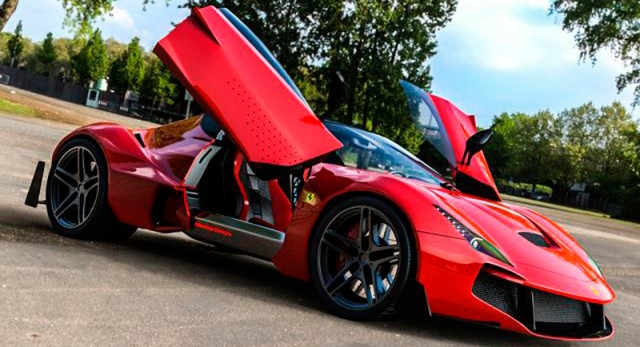

Ferrari es una empresa de automoviles deportivos con sede en Maranello (Italia). Fue fundada en 1929 por un piloto de autos de competicion, Enzo Ferrari, con el nombre de Scuderia Ferrari, construyendo automoviles de competicion y, mas tarde, en 1947, fabricando autos deportivos.
Originalmente, la Scuderia Ferrari patrocinaba a pilotos y automoviles de Alfa Romeo y Fiat. La empresa comenzo a producir automoviles en serie. Se convirtio en Ferrari S.A.Fiat Group entro a ser parte del Consejo de Administración y se hizo accionista de la empresa. Actualmente el principal accionista es Fiat Group, con el 90%, un 5% de las acciones ha sido comprado, en 2005, por una empresa de los EAU, y el resto pertenece a Piero Ferrari, hijo de Enzo. La empresa tiene su sede en Maranello, cerca de Bolonia y Modena, Italia.Ferrari vendio 5409 unidades, con una subida de ventas del 8,7%, y con una facturacion de 1500 millones de euros.